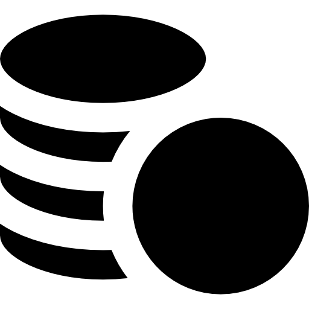
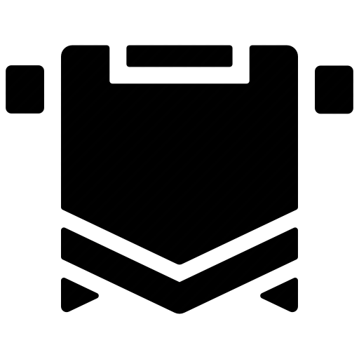
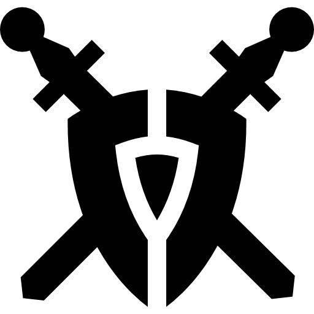
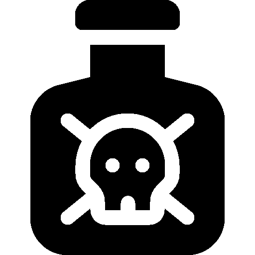
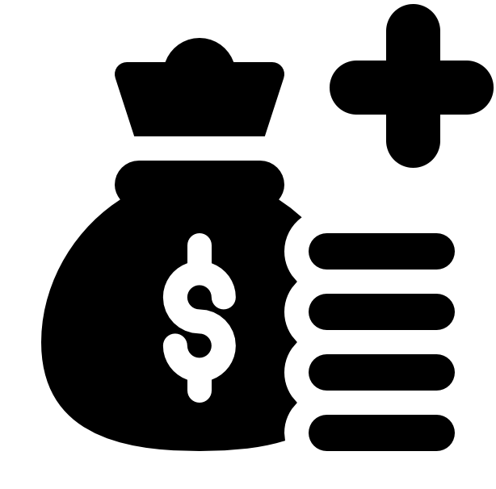

Сюжетные диалоги
Рассмотрим более подробно возможности новой диалоговой системы в создании уникальных историй о клиентах, приходящих в лавку. Разберём сюжетный тип диалогов и узнаем его отличия и особенности.
Так как сам принцип движения по диалогам уже был рассмотрен ранее, я не буду вдаваться во все детали в рассматриваемых ниже примерах, а лишь упомяну об отличиях и нововведениях.
Наш новый клиент очень необычен, поскольку по ходу диалога так и пестрит скептицизмом по отношению работоспособности продаваемых зелий. Игроку он будет казаться забавным выскочкой и может вызвать самый различный спектр эмоций. Именно эту задачу и должна выполнять увлекательная история.
Одним из отличий клиентов сюжетных диалогов являются условия их прихода в лавку. Например, наш кандидат имеет обязательное условие прихода — отсутствие других клиентов, только в этом случае он появится в магазине.
 Зачем нужны условия для прихода клиента? <Осторожно, спойлер>
Зачем нужны условия для прихода клиента? <Осторожно, спойлер>
Это условие необходимо в развитии истории тем, что нестандартные действия игрока не будут замечены другими клиентами, т.е. не возымеют свидетелей. Ведь по ходу этого диалога над клиентом можно поглумиться, превратить в зверька и даже убить. Это произойдёт путём отдачи клиенту зелья на пробу.
Сам ход сюжетного диалога такой же, как и у торгового, и поэтому я советую ознакомиться с ним самостоятельно по принципам предыдущего диалога. Здесь же разберём первый встречающийся момент, который отличает сюжетный диалог от торгового — наличие в нём «Важного выбора»:
 Кликните для увеличения
Кликните для увеличенияСам переход к нему открывает перед игроком окно с вариантами возможного выбора («Автовыбор» же означает моментальный выбор определенного варианта из существующих, то есть в случае выше — ):
 Кликните для увеличения
Кликните для увеличенияОказавшись перед «Важным выбором» игрок должен определиться с направлением своего поведения. Кто-то может поступить, основываясь на первоначальных ощущениях, другой же — подойти к выбору более обдуманно: действовать в рамках морали или предполагать вероятные последствия своих решений. Каждый выбор приводит игрока к особенному развитию дальнейшей истории.
Можно заметить, что некоторые из вариантов доступны только при некоторых условиях, например вариант игрок сможет выбрать только в случае прохождения начального квеста Тёмной гильдии (он описан в Вопросе 2.6).
Также по причине того, что сюжетные диалоги содержат в себе элементы торговых, в некоторых из них в зависимости от выбора клиент может оставить чаевые и стать постоянным клиентом. Конкретно в этом диалоге только в случае выбора варианта, игрок может рассчитывать на чаевые и постоянного клиента:
| Конечные условия |
| Клиент станет постоянным только если в окне важного выбора был выбран вариант |
| Клиент станет постоянным с шансом в 100% при 4  |
| Клиент станет постоянным с шансом в 75% при 3 |
| Клиент станет постоянным с шансом в 50% при 2 |
Некоторые из существующих вариантов «Важного выбора» одобряются или порицаются какими-либо гильдиями и меняют репутацию в них. Такой выбор сказывается на репутации в 5 раз больше, чем от одиночных реплик по ходу диалога. В плане интерфейса из всего этого игроку виден лишь текст выбираемых вариантов. До осуществления выбора он не знает, какая гильдия это одобряет, а также не видит пояснительные кнопки.
 Преимущества Гильдии магов. Предугадывание событий
Преимущества Гильдии магов. Предугадывание событий
Способность видеть последствия выбора заранее, а именно будущее изменение отношения гильдии, открывается у членов Гильдии магов:
Также, среди способностей, открывающихся при улучшении репутации, — это возможность понимать точную трактовку выбора, что указывается на кнопках (изначально они не отображаются):
С развитием этой способности кнопки начинают отображать больше информации:
Остановившись на каком либо из вариантов, игрок переходит к отдельным «Продолжениям» диалога:
 Кликните для увеличения
Кликните для увеличенияНа этом этапе игрок выбирает зелье из существующих вариантов и тех, что он создал (или может создать), и получает соответствующую ему реплику (зелья в этом диалоге выбраны в качестве примера):
 Кликните для увеличения
Кликните для увеличенияОсобые возможности гильдий. Уникальные события и предметы
«Зелье с парализующим ядом» — как один из вариантов дополнительно открывающихся возможностей, что даёт какая либо гильдия по ходу получения в ней репутации. Рецепт этого особого зелья выдаст Тёмная гильдия, когда игрок возвысится в ней по рангу и станет доверенным лицом. Само зелье позволяет временно парализовать жертву. Делается оно сложнее других ядов, но такие жертвы в гильдии ценятся намного больше.
Большая часть «Продолжений» приведёт игрока к пронумерованным «Исходам»:
 Кликните для увеличения
Кликните для увеличения«Исходы» являются чередой происходящих событий после ухода клиента из лавки. Они вкратце описывают то, что будет происходить в дальнейшем, путём задействия системы диалогов и нарративных игровых объектов, таких, как сова и городская газета.
«Коллекция диких клиентов» — демонстрация того, как интересным образом можно применить эффект зелья полиморфа: навсегда превращённые в зверюшек клиенты становятся своеобразными покемонами. Внутриигровое коллекционирование повышает реиграбельность за счёт эффекта "Собери их всех!". Главное предоставить игроку интерфейс, в котором он может лицезреть свою драгоценную коллекцию.
Возможность выбора реплик в диалогах касающихся «Коллекции диких клиентов» будет дана игроку после получения рецепта полиморфа с перманентным эффектом, например через квест, покупку, прокачку и т.д.
События, происходящие в «Исходах» идут параллельно с другими игровыми событиями. По ходу истории игроку также предоставляется возможность выбора её развития. Конкретно в этом случае игрок, оказавшись в одном из «Исходов», вынужден расплачиваться за совершённое:
 Кликните для увеличения
Кликните для увеличения Примечание
Примечание
«Важный выбор», «Продолжения» и «Исходы» используются лишь как условные разграничители для упрощения восприятия диалоговой системы.
Подробно разберём каждый из «Исходов»:
Исход #1. «Шутка и наказание»
На следующий день в магазин зайдут Скептик и полицейский, они начнут с игроком сюжетный диалог. В ходе него полицейский всячески будет намекать, что вопрос решается только деньгами, но игрок, который имеет достаточно репутации в Гильдии воинов, может попытаться надавить этим и попробовать пройти сначала одну проверку, а после вторую.
Как происходят проверки?
Проверки проходят случайным образом, где какая-либо характеристика персонажа игрока выступает в качестве множителя, повышающего вероятность успешного исхода. В данном случае этой характеристикой выступает количество репутации в Гильдии воинов.
 Преимущества Гильдии воинов. Связи с полицией
Воины и полиция тесно связаны, поэтому одним из главенствующих преимуществ члена Гильдии воинов — частое схождение с рук различных «проблемных ситуаций с законом».
Проверки/Взятки:
- На решение проблемы неудачной шутки над Скептиком
- На создание проблем с законом у Скептика
1На решение проблемы неудачной шутки над Скептиком
2На создание проблем с законом у Скептика
Если первая проверка пройдена удачно, то проблемы с законом решаются, и игрок может попробовать пройти вторую проверку. Получив успех в ней, он попадёт на уникальное ветвление в диалоге — в нём проблемы с законом начнутся уже у Скептика.
Игрок мог не проходить проверки и заплатить полицейскому сразу, чтобы решить проблемы. Если же игрок решил проходить проверки и это закончилось неудачей, то он вынужден заплатить полицейскому больше за последующие взятки, чем предполагалось изначально.
Если невозможность оплатить вторую взятку полицейскому за «доставление проблем Скептику» только лишит особенной ветки диалога, то, если игрок не сможет оплатить первую требуемую взятку, его ждёт попадание в Темницу на 2 игровых дня.
Чем сулит попадание в Темницу?
Находясь в Темнице, игрок теряет игровые дни, вследствие чего пропускает происходящие во время них события. Это ведёт к финансовым потерям из-за пропуска приходящих клиентов в эти дни — как постоянных, так и новых. Также это приводит к утрате некоторых несвязанных с главным сюжетом историй, что подразумевают приход клиентов в лавку за это время. Будучи в Темнице, игрок также может читать городскую газету и взаимодействовать с филином.
Темница — жестокий механизм воздействия, что провоцирует игрока перепроходить игру снова и снова. Ведь некоторые истории и их продолжения будут пропускаться в первых прохождениях, из-за чего в последующих они окажутся для него в новинку.
Особые возможности гильдий. Вызволение из Темницы
Каждая из гильдий обладает большим количеством связей среди знатных людей и поэтому имея членство в какой-либо из них вас могут с некоторым шансом вытащить из Темницы преждевременно. На это игрок будет тратить свою репутацию в гильдии, из-за чего не прокачивать гильдийские навыки и оттягивать прохождение cюжетной линии гильдии.
Чем больше дней игроку нужно находиться в Темнице, когда он пытается выйти досрочно, тем больше цена репутации. С каждым досрочным освобождением планка требуемой репутации будет повышаться, становясь всё более недосягаемой для дальнейших попыток.
Исход #2. «Горе от неверия»
При попадании в этот исход игра проверяет, был ли убит Скептик, или же — превращён в индюка. В случае его убийства игрок должен определиться с тем как он распорядится с телом его бывшего клиента:
1 Расчленить на ингредиенты
Нехорошие зелья требуют нехороших ингредиентов, а их крайне сложно достать. Поэтому тело может послужить в качестве получения таких труднодоступных ингредиентов, как человеческая кровь, плоть, жир и кости.
2 Передать Тёмной гильдии
Если 1-ый выбор явно сделал игрок-садист. То этот выбор будет делать игрок, что решил служить Тёмной гильдии.
Услужить ей телом можно разными способами:
- Если игрок уже убил клиента, то Тёмная гильдия примет бывшего клиента в качестве объекта для изучения их патологоанатомами, это даст игроку репутацию внутри гильдии, а также новые знания в области алхимии и зельеварения.Примечание: Если на жертве было применено Зелье с парализующим ядом, то он получит бо́льшую награду в опыте.
- Если игрок применил Зелье с парализующим ядом, то он может пожертвовать его
 Пожирателю. Жертвуя тело этому древнейшему монстру, игрок
будет получать уникальные эффекты/бонусы/артефакты и продвигаться в сюжетной линии Тёмной гильдии (Подробнее о ней в 2.6).
Пожирателю. Жертвуя тело этому древнейшему монстру, игрок
будет получать уникальные эффекты/бонусы/артефакты и продвигаться в сюжетной линии Тёмной гильдии (Подробнее о ней в 2.6).
После произошедшего история временно утихнет и продолжится только через несколько дней: просматривая газету игрок заметит объявление в газете о розыске с фотографией Скептика и его описанием. Спустя ещё пару дней, полиция начнёт производить его розыск в районе пропажи и опрашивать людей в возможных местах посещения. Поэтому в алхимическую лавку обязательно зайдёт полицейский и начнёт с игроком сюжетный диалог.
В ходе диалога полицейский будет утверждать, что большинство опрашиваемых людей в округе сообщило, что Скептика видели именно около этой лавки. Хранитель правопорядка скажет, что хоть улик однозначных нет, но наш алхимик пока что один из подозреваемых.
Игроку придётся отмазываться от утверждений полицейского чтобы убрать с себя подозрения. В ходе этого диалога произойдут следующие расклады с различным выбором:
1 В случае, если игрок является членом Гильдии магов, то полицейский даже не будет церемониться и тут же сообщит, что единственным способом избавиться от попадания в Темницу, в качестве главного подозреваемого, пока полиция будет обыскивать вашу лавку, — это взять на себя выплачивание крупного кредита полицейского.
2 Если же игрок не относится к членам Гильдии магов, то в ходе разговора у него есть попытка соврать, пройдя проверку. Множителем успеха в ней также будет выступать репутация в Гильдии войнов. В случае неудачи игроку так или иначе придётся выплачивать крупный кредит.
Преимущества Торговой гильдии. Кредиты
К слову, возможность брать кредиты есть у членов Торговой гильдии. Кредиты помогают решать непридвиденные расходы по ходу игры, как, например, неожиданные сюжетные повороты, задолженность по налогам и те же взятки полицейским.
Кредиты выплачиваются в течение нескольких игровых недель и чем больше игрок прокачал эту способность, тем меньше процент дополнительной выплаты.
Крупный кредит с большим процентом выплаты, который пытаются взвалить на игрока тому может оказаться не по силам. Ведь полицейский сразу просит недельную ставку вперёд, к тому же игроку придётся платить его ещё как минимум одну неделю. Поэтому, если таких денег нет, то игрок попадает в Темницу, но в этот раз на целых 5 дней с шансом в 30% на казнь.
«Казнь»?
Казнь. Смерть. Конец игры. И игроку придётся начать всё заново. Игре необходим непредвиденный конец. Критическая мера наказания за необдуманную игру, что пробуждает в игроке волну энтузиазма направленную на то, чтобы теперь точно делать всё правильно. Это психологический механизм воздействия.
Как она будет проходить?
Убийственно. А если без шуток, то игрока просто в какой-то из дней нахождения в Темнице ставят в известие, что его персонажа казнят. Появляется текстовое сообщение с сопровождающей иллюстрацией виселицы или палача у плахи.
И ничего не сделать?
По ходу игры в качестве вознаграждения за какие-то события игрок вполне может получать «билеты на жизнь» и таким образом отменять казнь, но они даются крайне редко.
3 Если игрок имеет высокий ранг в Тёмной гильдии, то в ходе сюжетной линии он получил Тёмный символ на своём теле, который он может показать полицейскому, чтобы тот убежал из лавки в страхе и больше не тревожил. В таком случае история закончится без выплаты кредитов.
 Преимущества Тёмной гильдии. Тёмный символ
Преимущества Тёмной гильдии. Тёмный символ
Этот символ позволяет внушать людям сиюсекундный страх напоминая им о... невечности человеческого бытия. Он всего навсего даёт человеку понимание, что вы связаны с теми людьми, которые способны уже сегодня убить его друзей и родных.
Само использование символа крайне рискованное занятие, ведь кто-то все равно может расколоться, а игрок из-за этого окажется в Темнице на следующий же день и казнён без права на помилование по указу короля. Изначальный шанс на такой расклад событий — 17%. Но с прокачиванием способности этот шанс незначительно уменьшается.
Особые возможности гильдий. Продуманный баланс
У каждой из гильдий, помимо преждевременного вызволения из Темницы, есть свой уникальный инструмент для обхода негативных игровых обстоятельств:
Гильдия войнов: Прямой обход закона за счёт связей в полиции
Гильдия магов: Возможность предвидеть события, что предостерегает игрока
Торговая гильдия: Кредиты, что позволяют выкарабкаться в непридвиденные обстоятельства
Тёмная гильдия: Тёмный символ на теле, что наводит ужас на людей
Таким образом, у игрока всегда есть возможность исправить одиночные ошибки за счёт «спасательного круга». Настоящей проблемой становится череда ошибок.
Скептик в качестве постоянного клиента
Помимо Исходов с издевательствами, превращением в индюка и убийством, также есть расклад в котором между игроком и Скептиком всё-таки возникает понимание. Это происходит в случае когда игрок решил не пойти на поводу забав или зова Пожирателя, а дал Скептику обыкновенное зелье, т.е. выбрал в «Важном выборе» и таким образом попал на 1-ое продолжение:
 Кликните для увеличения
Кликните для увеличенияПосле ухода Скептика, игра так же, как и в разобранном ранее примере с магом, рандомизирует его вероятность становления постоянным клиентом в зависимости от под конец диалога. Не забываем о том, что он также может оставить чаевые.
| Клиент станет постоянным с шансом в 100% при 4 |
| Клиент станет постоянным с шансом в 75% при 3 |
| Клиент станет постоянным с шансом в 50% при 2 |
Если Скептик стал постоянным клиентом, то игрока ждёт с ним повторная встреча, в которой он может поведать об истинных причинах своего скептицизма к зельям:

Как постоянный клиент, Скептик будет регулярно покупать бытовые зелья, что берут другие горожане в своих повседневных делах:
Познакомимся с ещё одним забавным диалогом о юноше, позабывшем обо всем на свете. Обо всём... кроме прекрасной дамы в своем сердце. Он так сильно впал в «любовь», что позабыл даже о самом себе, из-за чего превратился в крайне жалкое зрелище. На нашу ношу выпала участь выбирать: воспользуемся ли мы слабостью парнишки в угоду себе или поможем ему побороть её?
Этот диалог в первую очередь выделяется тем, что задействует несколько новых механик. Одна из таких — потеря клиентов в ходе диалога. Но чтобы терять клиентов, они должны быть, и поэтому условием прихода влюбчивого парнишки это:
Примечание
Для реализации этой механики игрок должен видеть количество находящихся клиентов в лавке каким-либо образом. Например просто счётчиком сбоку экрана, либо для лучшего эффекта можно реализовать подобие карты очереди клиентов с их миниатюрными изображениями.
Люди из очереди начнут пропадать ещё в начале диалога из-за излишней робкости и медлительности нашего новоиспечённого клиента, но только в том случае, если игрок осознанно идёт на это:
 Кликните для увеличения
Кликните для увеличения— видимый игроку значок, что говорит о потере одного клиента стоящего в очереди при выборе этой реплики.
Большинство игроков конечно бы стало проявлять снисходительность перед парнем, но за счёт механики потери клиентов мы провоцируем их хорошенько подумать над выбором роли «хорошего дяди» в этом диалоге.
Следующая новая механика, которую можно заметить в этом диалоге это Мысли главного героя:
 Кликните для увеличения
Кликните для увеличенияМысли — это комментарии алхимика по поводу происходящего, что в свою очередь дают игроку возможность яснее осознать предстоящий ему выбор. Работают они просто: при открытии соответствующего блока диалога, в котором есть комментарий алхимика, Мысль отображается сбоку от реплик и провоцирует игрока на нажатие. После чего возникает соответствующее номеру окошко с содержимым:
 Кликните для увеличения
Кликните для увеличенияПрочитав её, игрок нажмёт кнопку "Далее" и в блоке диалога появятся новые связанные с Мыслью реплики. Изначально игроку эти реплики не отображаются.
Есть важный нюанс — конкретный пронумерованный блок с Мыслью возникают по ходу диалога лишь единожды. Чтобы точно разобраться как это работает взглянем на изображение ниже:
 Кликните для увеличения
Кликните для увеличенияМысль №2возникает здесь дважды подряд, но игрок в случае попадания в первый блок не будет видеть её повторно, когда перейдёт в следующий. Получается, что он и не увидит скрытой реплики связанной с ней. У него уже был этот выбор в блоке ранее, и он его сделал, второго шанса не будет.
Это не относится к отдельным номерам: каждый из номеров возникает единожды. Получается, если за диалог возникла Мысль №2, то при попадании на соответствующий блок возникнет и Мысль №1.
При рассмотрении диалога можно заметить новый значок:
— обозначает особую реплику, которая открывает игроку возможность выбрать избранный вариант в «Важном выборе».
Получается, что попав на окно с «Важным выбором» игрок не будет видеть вариант, если не выбрал соответствующей реплики с :
 Кликните для увеличения
Кликните для увеличенияЕсли разобраться в диалоге, это становится логичным, потому что вариант должен видеть только тот игрок, что правильно отреагировал на Мысль №1. Ведь тот, кто решил проигнорировать эти раздумья, всё же больше тяготит к успешной продаже зелья, нежели к реальной помощи парнишке.
Разберём, какого поведения в рамках морали может придерживаться игрок в этом диалоге:
1Желающий просто продать зелье сделает это быстро, пропустив таким образом «Важный выбор» и получив свои заветные  в пятикратном объёме. Такой игрок столкнётся с противоречивым исходом, в котором величина его равнодушия к пареньку будет вынужденно проверена.
2Тот кто хочет как-то помочь, но имея взгляд «жизни других — это их дело», хоть и не останется в стороне, но из-за своей нерешительной и противоречивой позиции будет вынужден спонсировать парня некоторое время. А в дальнейшем вместе с ним поймёт, что такие методы не работают и лучше было бы сразу начать бороться с зависимостью и слабостью к равнодушному объекту вожделения. Так или иначе, исход в этом раскладе довольно благоприятен, ведь иногда нужно хотя бы пытаться и ошибаться, чтобы делать выводы.
3Другое дело игрок, обладающий решимостью и осознающий, что состояние парня совершенно ненормальное. Он понимает, что если кто-то сам просит о помощи, то помочь стоит, и сделать это честно, ведь «лучше горькая правда, чем сладкая ложь». А ещё лучше, когда эта правда подкреплена методом решения проблемы. По началу такой игрок встретится со стандартной реакцией отрицания правды со стороны паренька, но если он не сорвётся на негатив, то всё закончится позитивным образом. Если же игрок перегнул палку с жёсткостью, то его ждёт иной расклад.
4Также среди ролей есть равнодушный игрок, что решил игнорировать судьбу влюбчивого паренька и каким-то образом попал на неблагоприятный исход «Любовь до гроба». В какой-то момент времени он может сорваться и оказаться на других исходах, либо спасти положение в последний момент. В ином же случае его ждёт вполне очевидный конец, где он увидит истинную цену за равнодушие и игнорирование беды человека, в решении которой он мог как-то помочь.
Предложенная диалоговая система позволяет придумать безграничное количество подобных историй, задействуя одни и те же приёмы и нарративные объекты. Всего лишь переставляя их местами и заменяя текст, мы создаём воображаемую картину мира, которая живёт за рамками алхимической лавки. Далее мы подробнее углубимся в то, как диалоги подобного рода могут применятся в создании сюжета о Тёмной гильдии.
 Гейм-дизайн
Гейм-дизайн Игровая система: Диалоговая система для симулятора
алхимика
Игровая система: Диалоговая система для симулятора
алхимика Тестовое задание на Level
Designer Match-3
Тестовое задание на Level
Designer Match-3 Статья: «Mirror’s Edge, или как
гениальная идея для игры превратилась в её первостепенную проблему»
Статья: «Mirror’s Edge, или как
гениальная идея для игры превратилась в её первостепенную проблему» Таблица Google Sheets: Простая
система повышения уровня в CRPG
Таблица Google Sheets: Простая
система повышения уровня в CRPG UX/UI: Документ по улучшению интерфейса для Dark Bestiary
UX/UI: Документ по улучшению интерфейса для Dark Bestiary Задачи на теорию вероятностей
Задачи на теорию вероятностей Тестовое задание в компанию Z-Media
Тестовое задание в компанию Z-Media Нарратив-дизайн
Нарратив-дизайн Пример: Персонаж для
симулятора алхимика
Пример: Персонаж для
симулятора алхимика Текст:
Короткие описания предметов и игровых
объектов
Текст:
Короткие описания предметов и игровых
объектов Художественный рассказ: История о девочке, что хотела стать пиратом
Художественный рассказ: История о девочке, что хотела стать пиратом